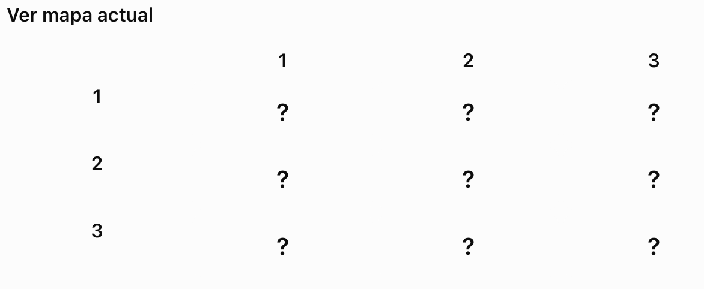
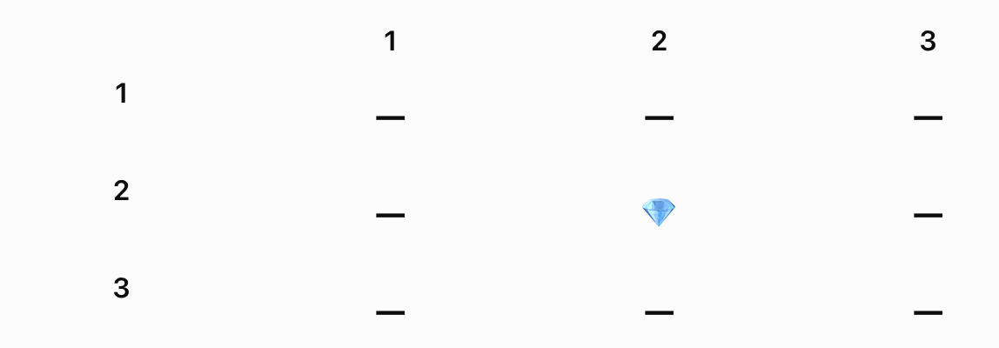

Práctica: Buscar el tesoro
1. Objetivo
Desarrollar una aplicación de consola en Python que simule un juego de búsqueda del tesoro.
El programa utilizará una matriz de 3 filas y 3 columnas. En una de sus posiciones se encontrará un tesoro que se colocará de forma aleatoria al iniciar la aplicación.
El jugador deberá intentar localizarlo indicando una fila y una columna.
Con esta práctica trabajaremos listas bidimensionales, índices, bucles, condicionales, funciones, números aleatorios y control de excepciones.
Menú principal
Al iniciar el programa se creará el mapa y se mostrará el siguiente menú:
================================
BUSCAR EL TESORO
================================
1. Ver mapa actual
2. Ver mapa resuelto
3. Jugar
4. Ver estadísticas
0. Salir
================================
Funcionalidades
Opción 1. Ver mapa actual
Mostrar la matriz sin revelar dónde está el tesoro. Se utilizará ?
para representar las casillas.
Ejemplo:

Opción 2. Ver mapa resuelto
Mostrar la posición real del tesoro utilizando T.
Ejemplo:

Esta opción es informativa y no debe modificar el mapa ni contar como intento.
Opción 3. Jugar
Solicitar al usuario una fila y una columna, ambas entre 1 y 3.
- Si la posición no es válida, mostrar un mensaje de error.
- Si la posición es válida pero no contiene el tesoro, mostrar:
¡Aquí no está el tesoro! Sigue buscando. - Si el jugador encuentra el tesoro, mostrar un mensaje de felicitación y generar automáticamente un nuevo mapa con el tesoro en una posición aleatoria.
El nuevo tesoro puede aparecer en cualquier casilla, incluida la posición anterior.
Ver estadísticas
Mostrar:
- Número de intentos realizados para encontrar el tesoro actual.
- Número total de tesoros encontrados.
- Número total de mapas generados.
El contador de intentos se reinicia al encontrar un tesoro. Los otros dos contadores se mantienen durante toda la ejecución.
Opción 0. Salir
Finalizar el programa mostrando un mensaje de despedida.
Requisitos técnicos
- Crear una matriz de 3x3.
- Colocar el tesoro en una posición aleatoria utilizando el módulo
random. - Utilizar funciones para organizar el código.
- Utilizar bucles para mostrar el menú y recorrer la matriz.
- Utilizar estructuras condicionales para controlar las opciones y comprobar si se ha encontrado el tesoro.
- Controlar los errores cuando el usuario introduzca texto en lugar de números.
- Validar que las filas y columnas estén comprendidas entre 1 y 3.
- Mostrar el mapa actual sin revelar el tesoro.
- Mostrar el mapa resuelto cuando se solicite.
- Generar un nuevo mapa cuando se encuentre el tesoro.
- Mantener y mostrar las estadísticas de la partida.
6. Entrega
Se entregará un único archivo Python llamado buscar_tesoro.py.
El código deberá estar organizado, utilizar nombres de variables descriptivos y contener comentarios que faciliten su comprensión.